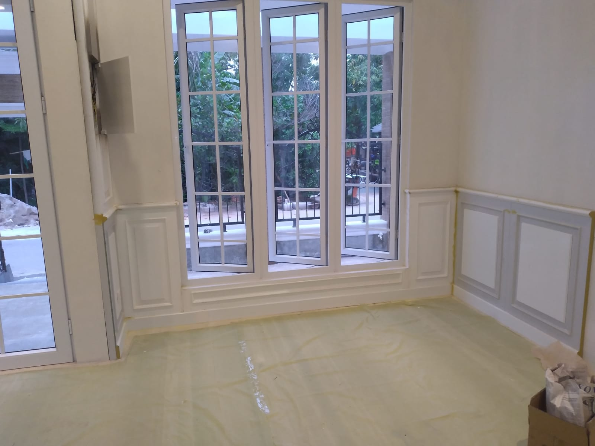
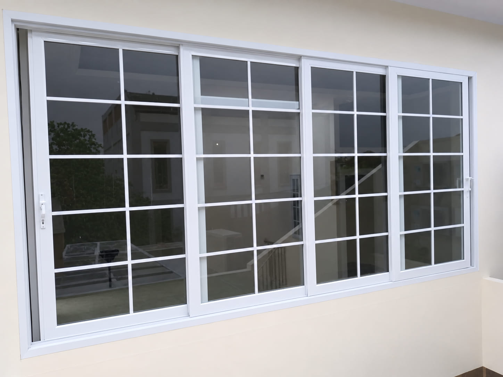

Bukaan samping
Daun memakai engsel friction-stay; arah dan sudut bukaan mengikuti konfigurasi.
Jendela UPVC casement adalah jendela yang daun bukaannya berputar pada engsel di sisi bingkai. Cara membukanya berbeda dari jendela geser, sehingga perlu ruang ayun yang cukup di sisi dalam atau luar sesuai rancangan. Model ini dapat dipertimbangkan untuk rumah maupun ruang usaha yang membutuhkan jendela operasional dan ingin menyesuaikan arah bukaan dengan tata ruang. Sebelum memilih, ukur bukaan dinding, tentukan arah engsel, dan bicarakan kondisi lokasi dengan tim agar rancangan sesuai kebutuhan.

Casement adalah mekanisme bukaan, bukan ukuran. Jumlah daun, arah ayun, dan kaca ditentukan lewat survei; foto hanya rujukan tampilan.
Jendela casement membuka ke samping dengan engsel friction-stay. Bergantung pada ukuran dan konfigurasi, daun dapat membuka lebar hingga batas rancangan; area terbuka berpotensi membantu aliran udara, tetapi hasilnya juga dipengaruhi angin, posisi jendela, dan tata ruang. Sediakan ruang ayun serta perhitungkan paparan angin dan jalur lalu lintas.
Pertimbangkan manfaat bukaan bersama ruang, arah angin, dan kondisi pemasangan.
Daun memakai engsel friction-stay; arah dan sudut bukaan mengikuti konfigurasi.
Daun dapat dirancang membuka lebar hingga batas maksimum sesuai ukuran dan perangkat.
Area terbuka yang lebih luas berpotensi membantu aliran udara bila posisi jendela dan kondisi ruang mendukung.
Casement dapat dipertimbangkan di kamar, ruang keluarga, dapur, atau ruang kerja bila bukaan dan ruang ayun memadai. Periksa keselamatan dan akses pembersihan, terutama di area luar atau lantai atas.
Warna, finishing, susunan daun, kaca, dan perangkat mengikuti kebutuhan serta ketersediaan. Minta opsi aktual dicatat pada penawaran.
Ringkasan ini menjelaskan mekanisme umum; ukuran dan opsi pesanan tetap mengikuti hasil ukur serta konfirmasi tertulis.
| Aspek | Informasi |
|---|---|
| Mekanisme | Bukaan samping dengan daun berengsel; arah ayun ditentukan saat rancangan. |
| Engsel | Menggunakan friction-stay hinges. Sudut dan batas bukaan maksimum mengikuti ukuran daun serta konfigurasi perangkat. |
| Ukuran | Ukuran akhir mengikuti pengukuran lokasi dan harus dicantumkan dalam penawaran. |
| Warna / finishing | Pilihan aktual dikonfirmasi saat konsultasi dan dicatat pada penawaran. |
| Kaca | Jenis dan susunan kaca dikonfirmasi untuk konfigurasi pesanan. |
| Aksesori | Jenis pegangan, pengunci, dan perangkat lain mengikuti konfigurasi yang disepakati. |
Pastikan area ayun kosong, lalu buka atau tutup melalui pegangan tanpa hentakan sesuai petunjuk. Jangan menggantung beban atau memaksa perangkat yang seret. Awasi anak-anak dan tanyakan opsi pengaman yang sesuai lokasi sebelum memesan.
Casement berayun pada engsel; sliding bergeser pada jalur tanpa ruang ayun, sedangkan fixed tidak dibuka. Pilihan bergantung pada bukaan, kebutuhan sirkulasi, akses, dan tata ruang.
| Model | Cara membuka | Hal yang perlu diperiksa |
|---|---|---|
| Casement | Daun berayun pada engsel samping | Ruang ayun dan arah bukaan |
| Sliding | Daun bergeser menyamping | Ruang untuk jalur geser dan akses pembersihan |
| Fixed | Tidak memiliki bukaan operasional | Kebutuhan ventilasi dan akses perawatan |
Foto berikut memperlihatkan contoh tampilan produk dan model pembanding. Konfigurasi aktual dapat berbeda.


Rincian produk dan pekerjaan dikonfirmasi bersama sebelum pesanan diproses.
Ceritakan fungsi ruang, lokasi, perkiraan ukuran, dan tampilan yang diinginkan. Foto lokasi membantu pembicaraan awal, tetapi tidak menggantikan pengukuran.
Jadwalkan pemeriksaan bukaan untuk mencatat ukuran aktual, kondisi dinding atau lantai, arah bukaan, serta akses kerja.
Tinjau rincian ukuran, konfigurasi, kaca, perangkat, harga, cakupan pekerjaan, dan jadwal. Minta semua kesepakatan dicantumkan sebelum persetujuan.
Setelah rincian dan jadwal disetujui, proses dilanjutkan sesuai kesepakatan. Periksa hasil pemasangan bersama tim dan simpan panduan perawatan yang diberikan.
Detail ukuran, warna, jenis kaca, perangkat, harga, ketersediaan, garansi, dan jadwal dapat berubah menurut pesanan. Konfirmasikan semua data melalui survei serta penawaran tertulis sebelum persetujuan atau produksi. Jangan menggunakan ukuran pada foto sebagai ukuran produksi.
Periksa ukuran bukaan, arah engsel, ruang ayun, akses membersihkan, serta kebutuhan ventilasi. Bahas pilihan kaca dan perangkat pada saat konsultasi. Foto hanya menunjukkan tampilan; ukuran dan konfigurasi akhir perlu disesuaikan dengan hasil ukur lokasi.
Model ini dapat dipertimbangkan untuk kamar, ruang keluarga, dapur, atau ruang kerja bila tersedia ruang ayun yang aman. Kelayakan ditentukan oleh kondisi bukaan, akses, dan rancangan bangunan, jadi minta pengukuran serta penilaian lokasi sebelum pemesanan.
Pilihan kaca, warna, finishing, pegangan, dan pengunci mengikuti konfigurasi serta ketersediaan saat pemesanan. Kami tidak mencantumkan opsi yang belum terverifikasi di halaman ini. Minta daftar pilihan dan rincian tertulis untuk produk yang ditawarkan.
Bersihkan permukaan dengan kain lembut dan pembersih ringan, jaga area engsel tetap bebas kotoran, dan operasikan tanpa hentakan. Jangan gunakan bahan abrasif. Jika daun seret atau pengunci bermasalah, jangan dipaksa; hubungi penyedia dan ikuti panduan produk.
Catat ukuran perkiraan dan kirim foto lokasi sebagai bahan awal, lalu jadwalkan pengukuran lapangan sebelum produksi. Konfirmasi kembali arah bukaan, jumlah daun, kaca, dan pekerjaan pemasangan pada penawaran supaya kebutuhan proyek tercatat dengan jelas.
Bandingkan model dan kategori sebelum menentukan konfigurasi.
Kirim pertanyaan dan rencanakan survei melalui WhatsApp.